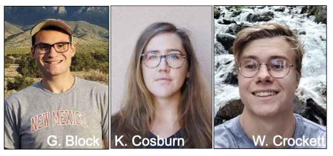
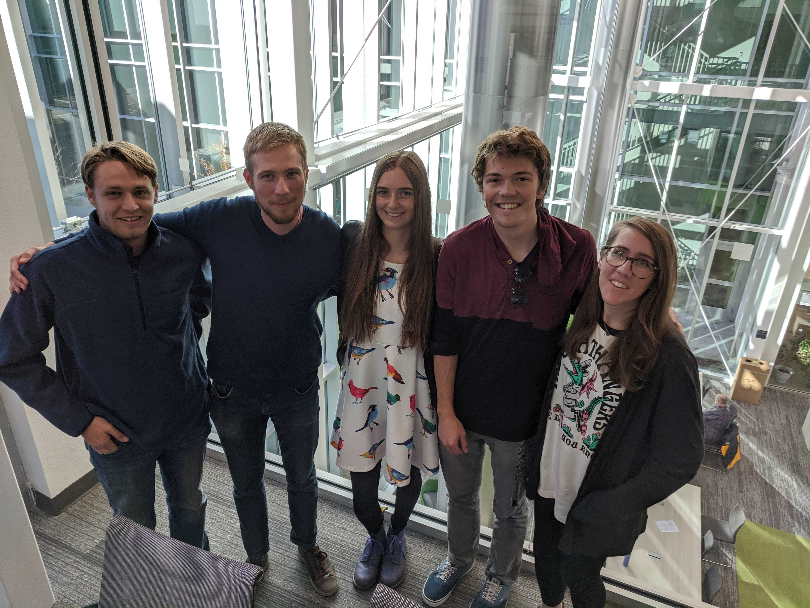
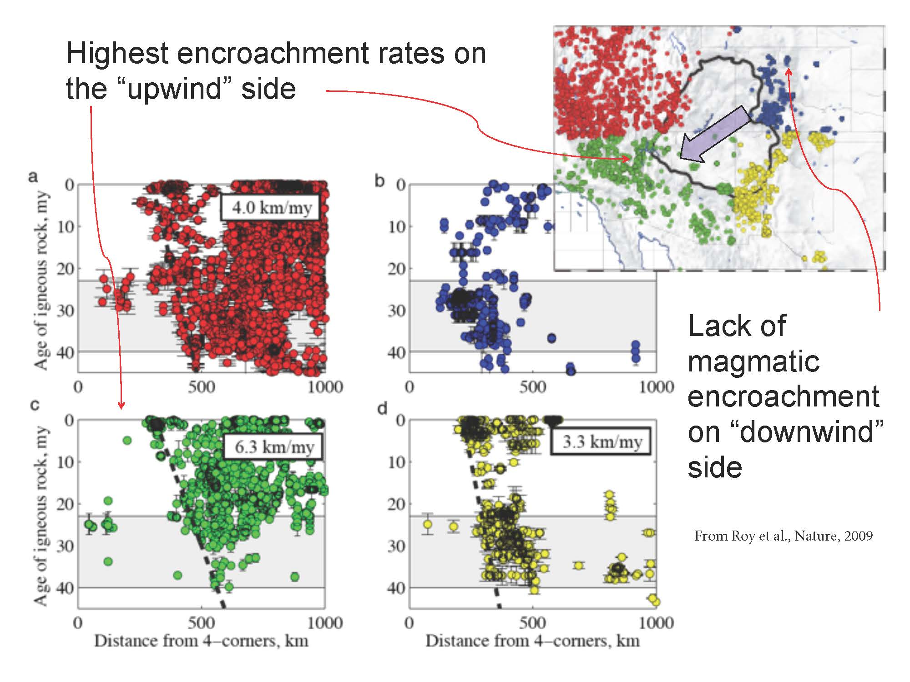
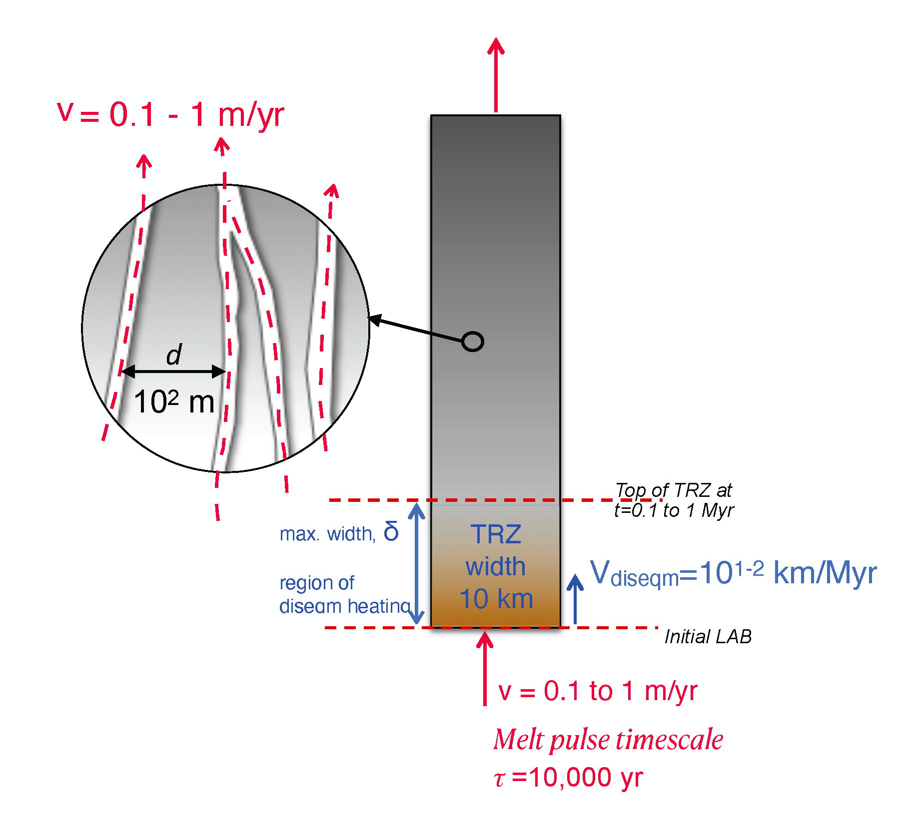
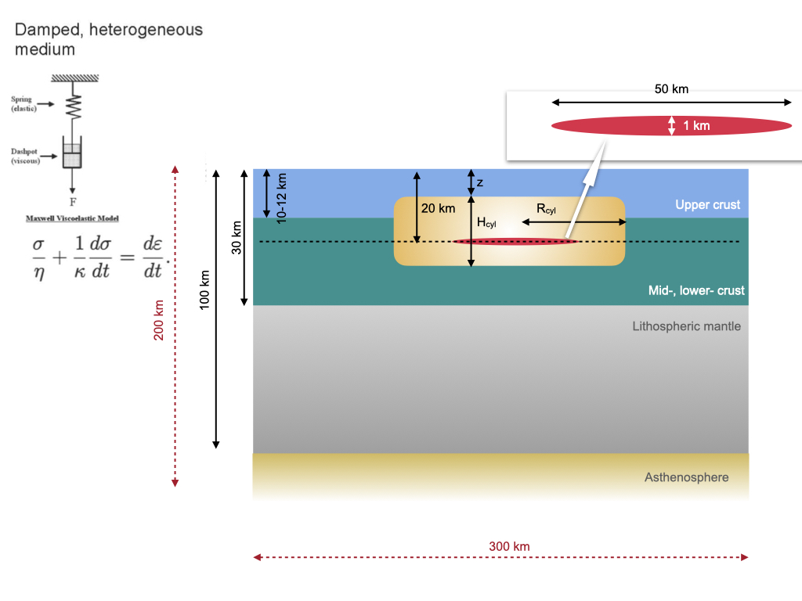
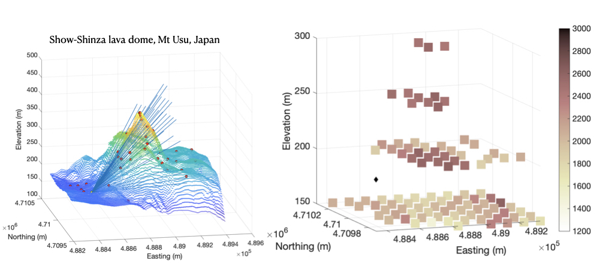
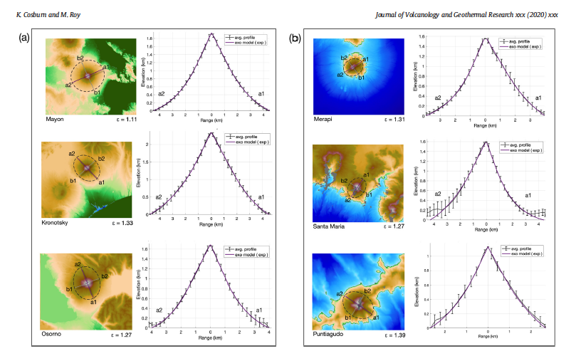

 Here is a photo of some of our group members in the brand
new Physics, Astronomy, and Interdisciplinary Science Building at
UNM!
Prospective students: I am always
looking for motivated graduate and undergraduate students who are
interested in using physics, math, and numerical modeling to solve
geologic problems. Please send me an email.
Postdocs: Dr. Joya Tetreault (now at NGU in Norway)
Graduate students: Katherine Cosburn (PandA), Meghan Lentz (PandA), Megan
Lewis (PandA), Nicolas George (UNM EPS) M. Dichter
(MS; now at Applied Technology Associates), Jon
MacCarthy (MS; now at LANL); K. Sanders,
C. Callahan (now at Grand Valley State Univ)
Undergrad senior
theses: B. Spears, A. Johnson, S. Gold, R. Osuna
Orozco, C. Peterson, N. Natek, D. Hayes
Other: V. Enders (Heidelberg), J. Sorenson, R. Dunagin, Mark
Fleharty (UNM Computer Science) - Linux system
administration and scientific programming
Current research themes/projects:
Area 1: Patterns of Cenozoic tectonic, volcanic and magmatic activity in the western US
 Funded by the NSF-EAR Division, this project aims to understand the processes that led to post-40 Ma lithosphere weakening in the Basin and Range Province of the Western US. This is a collaboration with L. Farmer and A. Clark at CU Boulder.
We will be looking at basalt geochemistry and laboratory melt-transport experiments in order to constrain our numerical modeling.
Area 2: Modeling of melt-migration within the mantle lithosphere in continents - what is the role of chemical and thermal disequilibirum?
 Funded by the NSF-EAR Division, this project aims to understand the role of disequilibrium processes during melt infiltration into the lithosphere-asthenosphere boundary. How do these processes manifest in our geochemical and geophysical observations, and how do they control the evolution of continents?
We plan on applying a number of methods, from 1D finite-difference to 2 and 3D Lattice Boltzmann codes.
Area 3: Modeling of mid-crustal magma intrusion

What can we learn about lithospheric evolution, structure, and rheology from modeling deformation patterns observed at the earth's surface, for example, from geologic and geodetic studies?
This is a collaboration with R. Grapenthin (U Alaska, Fairbanks) and M. Murray (USGS, NMTech) and graduate student G. Block is working on a suite of finite-element models of magma intrusion.
We plan on presenting this at the Fall 2021 AGU meeting.
Area 4: Volcano subsurface imaging

Combining multiple datasets,
e.g. the flux of cosmic ray muons, gravity, seismic data, we are exploring ways to use
machine learning in place of or as a supplement to joint inversion for Earth structure. This project involves a collaboration with R. Nishiyama at U. Tokyo. Previous collaborators include C. Rowe and E. Guardincierri at LANL. Graduate
student Katherine Cosburn is leading an effort to use machine
learning for estimating subsurface structure and will be presenting her first results at the AGU FM 2021
Area 5: Volcano topographic form

We have been very interested in the shapes of stratovolcanoes. Graduate student Cosburn has published a paper on this subject in JVGR in 2020, and undergrad exchange student V. Enders also contributed to this work.
Most recently, I have been interested
in modeling the piling of viscous flows using a range of rheologies and modeling approaches.
Current Grants (and funding source):
COLLABORATIVE RESEARCH: Investigating the Role of Mantle Metasomatism and Melt-Rock Interaction During Evolution of Continental Lithosphere Mantle (NSF-EAR)
MCA: Destroying continental plates - unraveling the role of magmatism (NSF-EAR)
What controls the shape of composite-cone volcanos? (UNM - Research allocations committee)
Destroying continental plates: the role of thermal and chemical disequilibrium during melt-rock interaction (UNM - Women in STEM - NSF Advance)
{kind=link}
{kind=link}
{kind=link}
{kind=link}
{kind=link}
{kind=link}
{kind=link}